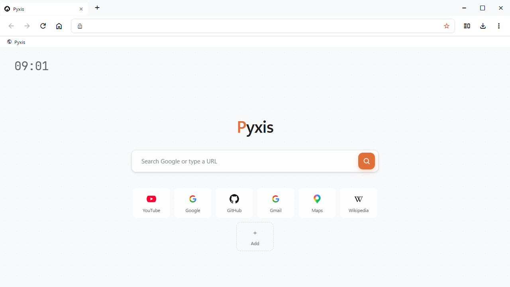

Pyxis is a local-first browser. No account, no sync, no telemetry — bookmarks and history live on your machine.

Every feature runs locally. Nothing on this list phones home.
Tabs resize fluidly as you open and close; pin the ones you keep — they shrink to favicons on the left.
Two pages side by side in one tab — research and source, docs and code.
A private tab lives inside the same window — no separate window to juggle, nothing written to history.
EasyList + EasyPrivacy filters baked into the engine. No extension, no account.
Folders, drag-and-drop grouping, a real manager page, overflow menu and middle-click batch open.
Chrome and tabs fold away for just the page — or go borderless fullscreen.
Full-page PNG capture, one-click copy without tracking junk, per-site data clearing.
Opt-in "continue where you left off" — off by default, your call.
Both palettes built in, switched live — plus bilingual English / Traditional Chinese UI.
0 telemetry.0 account.100% yours.
Bookmarks, history and settings are JSON in %LocalAppData%\Pyxis — readable, editable, deletable.
No account system exists — so nothing can be uploaded, leaked, or sold. The sync service was never built.
Delete the folder and every trace is gone. No remote account to deactivate, no data to request back.
Yes — it's a personal project, source available on GitHub. Download, run the installer, done.
JSON files in %LocalAppData%\Pyxis. Nothing is sent anywhere — there is no account and no sync service to send it to.
Same engine — Chromium via WebView2, so pages render like Edge. The shell is our own .NET 8 app, not a Chromium fork.
It checks the release channel on startup and offers the new installer — it never installs anything without your click.
Yes — the welcome screen links straight into Windows default-apps settings, and the installer registers Pyxis as a browser candidate.